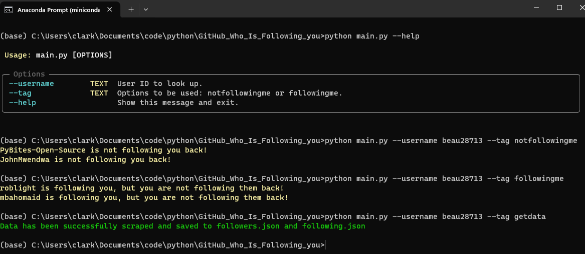

This project was started to help me understand how to use the Github API and to help me understand how to use the command line to pass arguments to a program. I also wanted to learn how to use the json library in python to parse the data. I also wanted to learn how to use the Typer library to parse the command line arguments.
Using Githubs API "https://api.github.com/users/{username}/{tag}" program loads users followers and following, saving them in json files. User can choose to see whos following them or who they are following.
